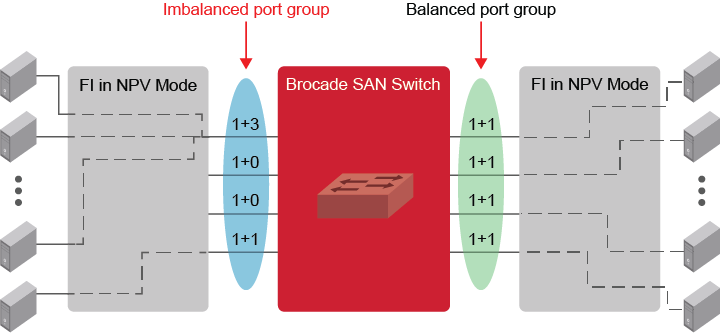

With multiple parallel FC uplinks from the UCS FI to the Brocade SAN switch, the FI evenly distributes the server vHBA logons (NPIV) among the available uplinks and keeps the links in a balanced state. If there is any failure on any of the uplinks, the server logons failover to the remaining available uplinks; but once the failed uplink is restored, the server logons do not failback. This results in an oversubscription of some of the uplinks and causes an imbalanced state.

The MAPS Monitoring UCS Uplink Distribution feature automatically detects and group the parallel UCS FI uplinks to the Brocade switch and monitor the UCS server logons over these links for oversubscription conditions. On detecting an imbalance, MAPS generates alerts to notify the administrators. Administrators can configure an automatic re_balance action or can perform a manual re_balance action.
MAPS forms the dynamic port group based on the vendor OUI and node WWN of the uplink ports. Ports are dynamically added or removed from the group when they are online or offline, respectively. The port groups are formed automatically, and no user configuration is required to create the port groups.
You can verify the port group state using the devicelogin --show CLI command.
switch:admin> devicelogin --show
------------------------------------------------------------------------------
Node WWN |State |Ports Count|Ports (Number of devices) |
------------------------------------------------------------------------------
20:aa:bb:05:xy:ef:e8:00|BALANCED |4 |7/39(9),7/36(9),7/37(9),7/38(9)|
MAPS monitors all the F_Ports connected through the same FI as a port group. MAPS monitors the number of devices that are logged in on individual ports in the group, and if the device count between two ports differs by more than one, it sets the port group to the IMBALANCED state.
TheDEV_LOGIN_DIST monitoring system monitors the port group state and has the following rules:BALANCED – This means that all the ports in the group have close to an equal number of devices.IMBALANCED – This means that the difference between the number of devices that are logged into any two ports in the port group is higher than one. This indicates that the device logons are not distributed as evenly as possible on the ports.BALANCED_FAILED – This means that MAPS acts and fails to rebalance the group.Once MAPS takes the re_balance action, it expects the FI to redistribute the devices among existing ports to bring back the port group into the balance state. MAPS waits for some time before it decides to set the port group state to BALANCE or BALANCE_FAILED. If it finds that the port group is still in the imbalance state, then the group state is set to BALANCE_FAILED. If the re_balance fails, you can manually rebalance the ports using the deviceLogin --rebalance CLI command.